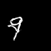
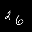
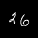

DeepGIFs: Using Deep Learning to Understand and Synthesize Motion
Humans are adept at intuiting how objects can and should move. We form this understanding before we form
our understanding of the physical mechanisms underpinning motion. Understanding `rules of motion' is central to the task
of generating realistic sequences. Frames should plausibly follow from previous frames, and objects should move, deform,
and interact realistically. Structuring a video generation task around consistent motion is a challenging task for which
deep learning is a well-suited solution and for our CS 231N final project at Stanford,
we did exactly that.
Abstract
Recurrent neural networks (RNNs) have seen widespread use across a variety of generative tasks requiring temporality. In this paper we explore the effectiveness of deep recurrent networks in the task of understanding
motion. In particular, we propose a modular architecture for inferring realistic motion from still `seed images', based on
the recent success of generative adversarial networks. We evaluate this architecture on a variety of synthetic datasets and
show that our network is able to successfully learn motion and generate new videos from still images.
Architecture

Results: Bouncing Ball


Results: Moving MNIST






